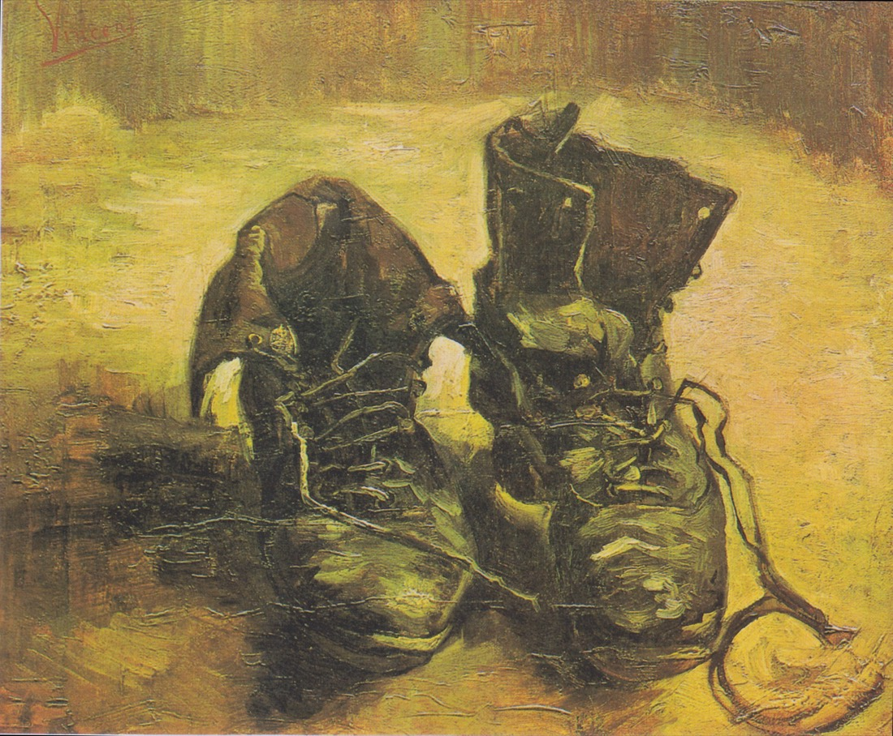

六个词，拆掉一座三百年的房子
笛卡尔把世界劈成两半：里面是能思的主体，外面是广延的客体。此后三百年，认识论都在问同一个问题——里面的表象怎么才能对上外面的东西。海德格尔的回答是：这个问题从一开始就问错了，因为它假设了一个从不曾存在过的、悬在世界之外的主体。
下面六个概念，是他拆房子用的六把工具。第三个概念里嵌着本站唯一的交互实验台——你可以亲手把一把锤子弄坏，看它怎么从"你手的延伸"变回"一件摆在那里的东西"。
此在：它的本质，在于它得去存在
德文 Dasein 拆开是 Da（此、这里）+ Sein（存在）。中译"此在"是陈嘉映、王庆节译本定下的，刻意不译成"人"——这个选择本身就是一个论点。
Das »Wesen« des Daseins liegt in seiner Existenz. SEIN UND ZEIT §9, H.42
"此在的『本质』在于它的生存。"注意海德格尔给"本质"加了引号——他是在拆这个词。传统形而上学问一个东西的本质，问的是"它是什么"：桌子的本质是可供书写的平面，三角形的本质是三条边围成的图形。这类回答预设了一个现成摆在那里、等着被描述的东西。
但此在不是这样的东西。你问一个人"你是什么"，任何答案——工程师、父亲、上海人——都不是他是什么，而是他正在去是什么。这些不是属性，是可能性。同一节紧接着说：能从这个存在者身上提取的那些特征，"不是某个如此这般『看上去』的现成存在者的现成『属性』，而向来只是它去存在的可能方式"。
所以译成"人"就毁了。"人"是个名词，指向一个现成的什么；"此在"指向一个正在进行的怎么样。这不是文字游戏——你之所以会为"我这辈子到底该做什么"焦虑，正是因为你不是一张已经写好的桌子。桌子从不焦虑。
在世界之中存在：连字符是一个论点
In-der-Welt-sein，SZ §12–13。海德格尔用连字符把五个词焊成一个词，这不是德语习惯，是排版层面的哲学主张：它要你没法把这个现象拆开读。
因为一拆就错。拆开来是"我"（主体）"在"（关系）"世界"（客体）"之中"——立刻恢复了笛卡尔的布局：一个内在的我，一个外在的世界，中间需要一座桥。近代哲学的大半精力花在造这座桥上：观念如何对应实在？他心如何可知？外部世界存在吗？
海德格尔说，这些问题之所以无解，是因为它们是事后构造出来的。真实的情况是：你从来没有"进入"过世界，你一睁眼就已经在里面忙着了。"在之中"不是空间意义上的包含关系——水在杯子里、衣服在柜子里那种。此在"在"世界之中，是"熟悉""操劳""打交道"的意思，更接近"他在这行里很在行"的那个"在"。
上手与在手：好用的工具是看不见的
这是《存在与时间》里最著名、也最容易上手的一段分析（SZ §15–16），而且它后来成了一枚哲学炸弹——1965 年，一个叫德雷福斯的人用它去炸人工智能的地基，见 座架与 AI。

后来 Meyer Schapiro 指出海德格尔把这双鞋读成了农妇的鞋，而它很可能是梵高自己的城市鞋；德里达又写了长文讨论这场争执。一双鞋引出了二十世纪最有名的一场图像学争论。Vincent van Gogh，藏于阿姆斯特丹梵高博物馆 · Wikimedia Commons · 公有领域
拿一把锤子钉钉子。当你真的在钉的时候，你不会去看那把锤子。你的注意力在钉子上、在木头上、在你要做的那个架子上。锤子这时候不是一个对象，它退到你的动作里去了，成了你手的延伸。海德格尔管这种存在方式叫 Zuhandenheit，上手状态——用得越顺，越不显眼。
那什么时候你才真正"看见"这把锤子？答案是：它出问题的时候。海德格尔在 §16 给出了三种、且只有三种断裂方式，德文原句如下——
| 德文 | 中译 | 触发 | 原文（H.73–74） |
|---|---|---|---|
| Auffälligkeit | 触目 | 坏了 · 不可用 | Das Auffallen gibt das zuhandene Zeug in einer gewissen Unzuhandenheit. |
| Aufdringlichkeit | 窘迫 | 不见了 · 缺失 | Je dringlicher das Fehlende gebraucht wird … um so aufdringlicher wird das Zuhandene. |
| Aufsässigkeit | 顽固 | 挡道 · 碍事 | Mit dieser Aufsässigkeit kündigt sich in neuer Weise die Vorhandenheit des Zuhandenen an. |
三者共同的效果，海德格尔一句话收口：
Die Modi der Auffälligkeit, Aufdringlichkeit und Aufsässigkeit haben die Funktion, am Zuhandenen den Charakter der Vorhandenheit zum Vorschein zu bringen. SEIN UND ZEIT §16, H.74
触目、窘迫、顽固这三种样式的功能，是让上手之物身上的现成在手性（Vorhandenheit）显露出来。换句话说：你之所以能把世界看成一堆摆在那里的对象，恰恰是因为它先坏过。理论态度不是从天上掉下来的，它是从故障里长出来的。
你手上有一把锤子，正在钉一个书架。先用它，再想办法弄坏它——看它怎么从「你手的延伸」变回「一件摆在那里的东西」。三种断裂方式都试一遍，实验台会给你收束。
被抛与常人：你的选择，大多不是你做的
Geworfenheit（被抛状态，SZ §29）说的是：此在从来不给自己的"在此"奠基。你没选出生年份、母语、父母、身体、所处的那个正在发生的历史时刻。你一睁眼，已经在局中，且已经有一手牌了。海德格尔的表述是此在总已发现自己"是且不得不去是"。
与之配对的是 Entwurf（筹划，§31）：此在总是朝着某种可能性去理解自己。两者不可分割，合起来是"被抛的筹划"——你只能从已经发到手里的牌出牌，但你确实在出牌。
那么谁在出牌？海德格尔的回答不客气：多半是 das Man（常人，§27）。这个词从德语的无人称代词 man 来——"man sagt"，人们说；"man tut das nicht"，这种事人们不做。常人不是任何一个具体的人，你在人群里找不到他，但他替你决定了：该读什么书、几岁该结婚、什么算成功、周末该怎么过。
日常此在的"谁"，恰恰不是我自己。 SEIN UND ZEIT §27 · 大意
常人靠三件东西运转：Gerede（闲言，§35）——话被反复传递，但没人回到事情本身去看；Neugier（好奇，§36）——不断要看新的，但不为了理解，只为了看过；Zweideutigkeit（两可，§37）——什么都好像已经被讨论过了、被理解了，于是真正的追问再无必要。
向死存在：不是想死，是把有限性收回来
先把定义摆出来，这是全书被引用最多的句子之一：
Der Tod als Ende des Daseins ist die eigenste, unbezügliche, gewisse und als solche unbestimmte, unüberholbare Möglichkeit des Daseins. SEIN UND ZEIT §52, H.258–259
死作为此在的终结，是此在最本己的、无所关联的、确知而又不确定的、超不过的可能性。这四个限定词每一个都在干活：
- 最本己（eigenste）——没人能替你死。别的事都能外包，这件不能。
- 无所关联（unbezüglich）——死的时候，所有社会关系一次性解除。你的头衔、人脉、别人对你的评价，在这一点上全部失效。
- 确知而又不确定（gewiss und unbestimmt）——一定会来，但不知道何时。这两条必须同时成立才有力量：只确定不会来是幻觉，只知道日期就成了倒计时。
- 超不过（unüberholbar）——它是最后一种可能性，之后不再有可能性。
关键在于：海德格尔要的不是让你怕死。恰恰相反，日常的怕死是逃避——常人把死处理成一件"迟早发生但眼下与我无关"的事件，一个统计概率，一条新闻。而"向死存在"是把死当成一种始终在场的可能性来承担，效果是让你的生存整体地显现出来：既然有终点，那这些可能性就不是无限的，选哪一个就成了真问题。
畏（Angst）不是更强烈的怕（Furcht）
这是范畴区别，不是程度区别（§40, H.188）。怕总有确定对象：怕那条狗、怕这次汇报、怕体检结果。有对象就有对策——躲开、准备、检查。畏没有对象。海德格尔说"畏之所畏是在世本身"：你说不出在怕什么，因为让你不安的不是世界里的某个东西，而是世界整体突然失去了理所当然性。
这种时候常人的意义网络失灵了，"人们都这么活"忽然不构成理由了。海德格尔用了个词：Unheimlichkeit——不在家、无家可归。而这正是它的价值：畏把你从常人手里暂时拽出来，让"我到底要怎么活"重新成为一个必须由你回答的问题。
座架：技术的本质，绝不是技术性的
时间跳过二十六年。1949 年 12 月，海德格尔在不来梅做了四场演讲，其中第二场题为《座架》（Das Ge-Stell）；1953 年 11 月他在慕尼黑把它改写重讲，定名《技术的追问》，1954 年收入《演讲与论文集》。这时他关心的已经不是此在，而是我们这个时代看待一切事物的方式。
他从一个否定开始：技术的通行定义——技术是达到目的的手段，是人的一种活动——是正确的（richtig），但不是真实的（wahr）。正确的定义描述了技术做什么，却完全没碰到技术是什么。
So ist denn auch das Wesen der Technik ganz und gar nichts Technisches. DIE FRAGE NACH DER TECHNIK · GA 7
校注：这句话在中外网络上通行的引法是「Das Wesen der Technik ist ganz und gar nichts Technisches」——去掉了承接上文的 So ist denn auch（"因此……也"）并调整了语序。含义无损，但那是名言化之后的版本，不是原文。此处按 GA 7 原句引。
他的推进路线是：古希腊的 technē 与 poiēsis 是一种解蔽（Entbergen）——让某物从隐蔽走向显现，他叫"带出"（Hervorbringen）。老式风车借风而转，它顺着风；农人耕地，他照料土地让它自己生长。
现代技术的解蔽方式变了，变成了促逼（Herausfordern）：向自然发难，要求它交出可开采、可转换、可贮存、可随时调用的能量。水电站不是顺着莱茵河建的，它把莱茵河摆置进自己里面，让河流成为水压的供应者。海德格尔还补了一刀：就连作为荷尔德林诗中对象的那条莱茵河，如今也首先呈现为一个可被订造的观光对象——而订造它的，是旅游业。

凡是这样被解蔽出来的东西，不再是"对象"（Gegenstand，字面义"对立而站"），而成了持存物（Bestand）：待命的、可调用的、可替换的库存。而Gestell（座架）就是这种解蔽方式本身——不是任何一台机器，是那种把人也一并摆置进去、逼着人以订造的眼光看待一切的聚集。
而他的出路给得很轻——引荷尔德林：Wo aber Gefahr ist, wächst / Das Rettende auch（哪里有危险，哪里也生救渡）。技艺 technē 在古希腊同时也是美的艺术之名，所以艺术或许是另一种解蔽方式。这个回答让很多人不满意，理由见下。
本质主义——费恩伯格（Andrew Feenberg）指控海德格尔把千差万别的具体技术（核电站、乐器、疫苗、互联网）统统收编进"座架"这一个图式，无法解释技术之间的实质差异。伊德（Don Ihde）在《Heidegger's Technologies》(2010) 里说得更直白：一种尺寸套不了所有情况——乐器就完全无法被塞进"持存物"框架。
政治上使人瘫痪——费恩伯格称之为"在政治上使人失能的实体主义"：如果技术是一种"天命"，那么民主地介入技术设计就无从谈起。他因此提出区分初级/次级工具化的"工具化理论"，试图把本质主义的洞见与可干预性重新接上。
浪漫主义乡愁——回到风车和农人的意象，暗含一种对前现代的怀旧，而这解决不了任何现实问题。
需要说明的是，也有学者为海德格尔辩护（如 Iain Thomson 2000 年在 Inquiry 上直接回应费恩伯格），认为"本质主义"这个指控本身对海德格尔的"本质"概念有误解。这场争论没有定论。
从"锤子坏了"到"莱茵河成了库存"，是同一条线
表面上，《存在与时间》（1927）讲此在，《技术的追问》（1953）讲技术，中间隔着一场"转向"。但六个概念是一条链，不是两堆：
接口就在第三个概念上。"现成在手"是一种局部的、由故障触发的揭示方式；而座架把它变成了全局的、预先设定好的唯一方式。锤子坏了，它才变成一件摆在那里、可测量的东西；而在座架之下，莱茵河不需要坏——它一开始就已经是待调用的水压了。这是同一个存在论移动，从偶发升级成了天命。
那块空地：澄明与去蔽
把这条链撑住的，是一个更基础的图像。海德格尔早期把真理还原为 ἀλήθεια（无蔽、去蔽），后期用 Lichtung——森林里的一块空地，光落进来。被照亮的是存在者，而那块空地本身是存在。空地不是被照亮的东西之一，你在被照亮的东西里永远找不到它。这就是存在论差异。
此条据英译本 On Time and Being, p.70 转引核实，德文原版 GA 14 页码未独立核对。
本页图片取自 Wikimedia Commons：梵高《一双鞋》（1886，公有领域，原作藏于阿姆斯特丹梵高博物馆）；莱茵费尔登老水电站（摄影 Wladyslaw Sojka，CC BY-SA 3.0 + GFDL）。完整许可以 Commons 各文件页为准。本站为非商业个人读书笔记，仅使用可自由传播的图片；如有版权问题请通过 GitHub issue 联系。